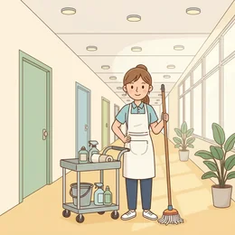

deutschoderwas · Sprechclub · Woche 1 · Strang B · Teil 1 · Dienstag, 15. September
MACHEN — das Wort, das alles kann
Frühstück, Termin, Musik, Platz, sauber. Ein einziges Verb, und plötzlich brauchst du zwanzig andere nicht mehr.
Dein Niveau
Gleiches Thema, andere Sätze. B1 übt die häufigsten Verbindungen, B2 die feinen und die Vorsilben.
„Ich mach das schon.“
Schaut euch das Bild an. Zwei Leute in der Küche. Wie viele Sätze mit machen fallen euch dazu ein — in dreißig Sekunden?
Was machst du jeden Morgen als Erstes?
Welche Sätze mit machen benutzt du schon?
Gibt es in deiner Sprache auch so ein Wort, das alles kann?
Warum brauchen Sprachen solche Alleskönner-Verben? Was wäre ohne sie?
Klingt es schlechter, wenn man immer machen sagt — oder einfach normal?
Wo würdest du ein genaueres Verb wählen: im Gespräch oder im Text?
🗣️ Sprecht reihum: „Heute Morgen habe ich … gemacht.“ · „Am Wochenende mache ich meistens …“ · „Was ich nie mache, ist …“
Ein Verb, drei Baustellen
machen steht in festen Verbindungen (Frühstück machen), in Vorsilben (aufmachen, mitmachen) und in Wendungen (das macht nichts). Heute nehmen wir die ersten beiden.
Was ist der Unterschied zwischen „Musik machen“ und „Musik hören“?
Was bedeutet „Mach mal!“ — und in welchem Ton?
Welche Verbindung mit machen hast du zuletzt gelernt?
👀 Zu zweit, eine Minute: Sammelt so viele Verbindungen mit machen wie möglich. Wer eine nennt, muss sie sofort in einem Satz benutzen. Wer stockt, gibt ab.
Zwölf Verbindungen mit machen
Sagt jedes Wort laut — und gleich den Beispielsatz hinterher. Erst dann bleibt es hängen.
Frühstück machen
„Ich mache uns schnell Frühstück.“
💡 Ohne Artikel — genau wie Mittagessen machen, Kaffee machen, Tee machen. Umgangssprachlich für „zubereiten“.
einen Termin machen
„Ich mache morgen einen Termin beim Zahnarzt.“
💡 Auch ausmachen oder vereinbaren. Mit Artikel, weil man einen bestimmten Termin meint.

sauber machen
„Ich mache am Samstag die Küche sauber.“
💡 Hier steht ein Adjektiv dahinter: sauber, kaputt, fertig, müde — das Muster ist immer gleich.
So klingt esIch macheschnellFrühstück, dann gehen wir.
2 · 💼 Bei der Arbeit einen Termin macheneine Pause machenFeierabend machenÜberstunden machen
So klingt esIch macheheute um vierFeierabend.
3 · 🚌 Unterwegs Platz macheneinen Ausflug machenUrlaub machenFotos machen
So klingt esMachen Sie bittePlatz, der Wagen muss durch.
4 · 💬 Im Gespräch Mach mal!Das macht nichts.Mach's gut!Was machst du beruflich?
So klingt esWasmachst du eigentlich beruflich?
1 · 🏠 Zu Hause, genauer sich etwas zu essen machenes sich gemütlich machenOrdnung machendie Wäsche machen
So klingt esWir machen es uns gemütlich und machen uns etwas zu essen.
2 · 💼 Im Beruf, gehobener einen Vorschlag machenFortschritte macheneinen Fehler machensich an die Arbeit machen
So klingt esIch mache Ihnen einen Vorschlag: Wir machen uns gleich an die Arbeit.
3 · 🚌 Unterwegs, feiner eine Reise macheneinen Umweg machenhalt machensich auf den Weg machen
So klingt esWir machen uns gleich nach dem Frühstück auf den Weg.
4 · 💬 Im Gespräch, idiomatisch Das macht mir nichts aus.Mach dir keinen Kopf.Das macht Sinn. / Das ergibt Sinn.Ich mache mir Sorgen.
So klingt esMach dir keinen Kopf — dasmacht mir wirklich nichts aus.
Verb das, was gemacht wird Zeit und Menge Höflichkeit
🗣️ Sofort anwenden: Erzählt euren gestrigen Tag von morgens bis abends — und benutzt dabei mindestens sechsmal machen. Die Gruppe zählt mit.
Vier Gespräche — zwei Runden
Runde 1: Lest den Dialog zu zweit laut. Runde 2: Auf den Knopf tippen — B verschwindet, und ihr antwortet selbst. Die Regieanweisung bleibt als Hilfe stehen.
Dialog 1 · „Morgens um halb sieben“
Ihr wohnt zusammen. Beide sind spät dran.
A
Ich bin total spät. Hast du schon Kaffee gemacht?
B
Läuft gerade. Ich mache uns auch schnell Frühstück.
🗣️ Antworte kurz und biete etwas an — mit einer Verbindung ohne Artikel.tippen = Hilfe zeigen
A
Du bist ein Schatz. Ich muss noch das Bett machen.
B
Lass mal, das mache ich nachher. Mach du dich lieber fertig.
🗣️ Nimm ihm etwas ab und benutz „sich fertig machen“.tippen = Hilfe zeigen
A
Und heute Abend? Machst du wieder Sport?
B
Nein, heute mache ich früher Feierabend. Wir könnten einen Spaziergang machen.
🗣️ Zwei Verbindungen in einem Satz: Feierabend und Spaziergang.tippen = Hilfe zeigen
A
Sehr gern. Bis heute Abend!
Dialog 2 · „Im Büro“
Dienstagvormittag. Die Kollegin will einen Termin verschieben.
A
Können wir für Donnerstag einen Termin machen?
B
Donnerstag ist schwierig. Ich mache Ihnen einen Vorschlag: Freitag um zehn.
🗣️ Sag ab und mach sofort einen Gegenvorschlag.tippen = Hilfe zeigen
A
Freitag passt. Machen wir das dann online?
B
Lieber vor Ort. Dann können wir gleich weitermachen, wo wir aufgehört haben.
🗣️ Entscheide dich und begründe mit „weitermachen“.tippen = Hilfe zeigen
A
Alles klar. Machen Sie heute noch Feierabend, oder wird es spät?
B
Ich mache noch eine Stunde, dann ist Schluss. Vorher mache ich aber eine Pause.
🗣️ Zwei Verbindungen: eine Stunde weiterarbeiten und eine Pause machen.tippen = Hilfe zeigen
A
Machen Sie das, Sie sitzen seit acht.
Dialog 3 · „Sonntagsplanung“
Samstagabend. Was macht ihr morgen?
A
Wollen wir morgen einen Ausflug machen?
B
Gern. Wir könnten eine Wanderung machen und unterwegs Fotos machen.
🗣️ Sag zu und schlag zwei Dinge vor — beide mit machen.tippen = Hilfe zeigen
A
Und wann machen wir uns auf den Weg?
B
Am besten früh. Ich mache uns vorher Frühstück, so gegen sieben.
🗣️ Nenn eine Zeit und was du vorher machst.tippen = Hilfe zeigen
A
Sieben ist hart. Machst du mir dann wenigstens Kaffee?
B
Mach ich. Und wenn du nicht wach wirst, machen wir eben halb acht.
🗣️ Sag zu und gib mit „eben“ nach — ohne zu diskutieren.tippen = Hilfe zeigen
A
Abgemacht.
Dialog 4 · „Vor dem Besuch“
In zwei Stunden kommen Gäste, die Wohnung sieht aus wie immer.
A
Wir müssen noch die Küche sauber machen.
B
Ich mache die Küche, du machst das Bad. Dann sind wir schneller fertig.
🗣️ Teil die Arbeit auf — zweimal machen, einmal fertig.tippen = Hilfe zeigen
A
Und der Flur? Da steht überall was rum.
B
Den mache ich zum Schluss. Erst mal Platz machen, dann putzen.
🗣️ Nenn eine Reihenfolge und benutz „Platz machen“.tippen = Hilfe zeigen
A
Ich habe die Vase kaputt gemacht, übrigens. Gestern schon.
B
Das macht nichts. Die war sowieso hässlich.
🗣️ Beruhige mit der festen Wendung „das macht nichts“.tippen = Hilfe zeigen
A
Puh. Danke.
🎭 Und jetzt ihr: Spielt Dialog 1 noch einmal — aber ohne das Wort machen. Was müsst ihr alles ersetzen? Genau darum geht es am Donnerstag.
🧩 machen mit Vorsilbe
aufmachen, zumachen, anmachen, ausmachen, mitmachen, weitermachen. Dieselbe Wurzel, sechs verschiedene Bedeutungen — und alle sind trennbar.
Eine Vorsilbe vor machen ändert die Bedeutung komplett. Alle sechs sind trennbar: Im normalen Satz wandert das Verb auf Position 2 und die Vorsilbe ans Ende. Nach einem Modalverb und im Nebensatz bleibt das Wort zusammen — genau wie bei anrufen oder aufstehen.
🚪aufmachenMachst du bitte das Fenster auf?
▾
🔒zumachenMach die Tür zu, es zieht.
▾
💡anmachenIch mache das Licht an.
▾
🌙ausmachenMach den Fernseher aus.
SubjektIch
Verb (Position 2)mache
Mittelfeldgleich das Fenster
Vorsilbe ans Endeauf.
Sechs Vorsilben, sechs Bedeutungen
Prägt euch die Paare ein — auf/zu und an/aus gehören zusammen.
🚪
auf ⇄ zu
Für alles, was offen oder geschlossen ist
Mach bitte das Fenster auf. · Mach die Tür zu.
🔌
an ⇄ aus
Für alles mit Strom oder Feuer
Ich mache das Licht an. · Mach den Herd aus.
🤝
mit / weiter / ab
Für Menschen und Verabredungen
Machst du mit? · Machen wir morgen weiter. · Das haben wir so abgemacht.
aufmachen ⇄ zumachenanmachen ⇄ ausmachenmitmachen — dabei seinweitermachen — nicht aufhörenabmachen — vereinbarenausmachen — auch: stören
Die Falle: zwei Bedeutungen von ausmachen
Dasselbe Wort, zwei völlig verschiedene Sätze — und beide hört man täglich.
✅ Richtig
Ich mache den Fernseher aus.
WarumTrennbar im normalen Satz: Verb auf Platz 2, Vorsilbe ganz hinten.
❌ Falsch
Ich ausmache den Fernseher.
MerkenZusammen steht es nur im Wörterbuch — im einfachen Satz nie.
✅ Richtig
Macht es Ihnen etwas aus, wenn ich das Fenster aufmache?
WarumHier heißt ausmachen: stören. Eine der höflichsten Fragen im Deutschen.
❌ Falsch
Stört es Ihnen, wenn ich das Fenster aufmache?
Merkenstören verlangt den Akkusativ: „Stört es Sie?“ Mit Dativ geht nur die Wendung mit ausmachen.
✅ Richtig
Wir können morgen weitermachen.
WarumNach einem Modalverb bleibt das Verb ganz — und geht ans Satzende.
❌ Falsch
Wir können morgen weiter machen.
Merkenweitermachen ist ein Wort. Getrennt geschrieben heißt es etwas anderes: „weiter machen“ im Sinne von „weiter hinten machen“.
🧱 Bau die Sätze selbst
Tippe die Teile in der richtigen Reihenfolge an. Danach auf „prüfen“.
📖 Und jetzt im Zusammenhang
Ein ganz normaler Dienstag. Wähle in jeder Lücke das passende Wort.
Drei Fälle, mehr gibt es nicht:
Normaler Satz → Verb auf Platz 2, Vorsilbe ganz ans Ende: Ich mache das Fenster auf.
Nach einem Modalverb → alles zusammen ans Ende: Ich möchte das Fenster aufmachen.
Im Nebensatz → alles zusammen ans Ende: …, weil ich das Fenster aufmache.
Ein Merksatz für alle drei: Ich mache auf. Ich will aufmachen. Weil ich aufmache.
🎭 Drei Alltagsszenen
Zu zweit. In jeder Antwort muss mindestens einmal machen vorkommen. Zwei Minuten, dann tauschen.
1 · Der Morgen zu zweit
A und B haben zwanzig Minuten, bis beide aus dem Haus müssen. Verteilt die Aufgaben.
Ich mache FrühstückMachst du Kaffee?Ich mache das BettMach dich fertig
Ich mache uns schnell etwas zu essenMachst du das Licht aus?Das mache ich nachherMachen wir es so
✅ Eine gute Runde enthältBeide verteilen die Aufgaben in ganzen Sätzen — und jede Antwort enthält mindestens ein machen.
2 · Der Termin, der nicht passt
A will einen Termin für Donnerstag, B kann nicht und schlägt etwas anderes vor.
Können wir einen Termin machen?Donnerstag geht bei mirMachen wir das online?Abgemacht
Ich mache Ihnen einen VorschlagDa lässt sich nichts machenMachen wir es lieber vor OrtDann machen wir Freitag weiter
✅ Eine gute Runde enthältB sagt nicht nur ab, sondern macht einen Gegenvorschlag — und am Ende steht eine feste Verabredung.
3 · Zwei Stunden vor dem Besuch
Die Wohnung ist unordentlich, das Essen fehlt, die Gäste kommen um sieben. Teilt alles auf.
Ich mache die Küche sauberMachst du den Salat?Das Licht mache ich anWir sind gleich fertig
Ich mache uns eine ListeMach dir keinen KopfDas macht nichtsWir machen es uns danach gemütlich
✅ Eine gute Runde enthältDie Arbeit wird konkret aufgeteilt, und mindestens eine feste Wendung kommt vor — das macht nichts, mach dir keinen Kopf.
🎴 Sprechkarten
Zieh eine Karte und sprich mindestens vier Sätze am Stück.
Deine Aufgabe
Tippe auf den Knopf.
⏱️ Die 90-Sekunden-Challenge
Ein Wort, anderthalb Minuten, freies Sprechen. Es muss nicht perfekt sein — es muss weitergehen.
Dein Wort
Frühstück machen
1:30
Erzähl es der Reihe nach, dann trägt sich die Zeit von selbst:
1. Wann machst du das — jeden Tag, am Wochenende, nie?
2. Wie genau läuft es ab?
3. Machst du es gern, und warum?
4. Was würdest du gern anders machen?
Und wenn ein Wort fehlt: beschreib es. „Das, was man abends macht, wenn die Arbeit vorbei ist“ ist besser als eine Pause.
⏱️ Spielregel: In jeder Runde müssen drei verschiedene Verbindungen mit machen vorkommen. Die Gruppe zählt mit.
✅ Sitzt es schon?
8 Fragen. Tippe auf deine Antwort — die Erklärung kommt sofort.
✍️ Lückentext
Wähle in jeder Lücke das passende Wort.
📣 Danach laut: Lest die drei Muster noch einmal vor — ohne Artikel, mit Artikel, mit Adjektiv. Erst wenn ihr sie hört, sitzen sie.
📮 Deine Hausaufgabe bis Donnerstag
Vier kleine Aufgaben, zusammen etwa 25 Minuten. Tippe eine an, wenn du sie geschafft hast.
💡 Warum das hilft:machen kommt in fast jedem deutschen Gespräch vor. Wer die zwölf Verbindungen sicher hat, spricht sofort flüssiger — ohne ein einziges neues Verb zu lernen.
0 von 0 Aufgaben geschafft.
So sieht die Sortierung aus:
Ohne Artikel: Frühstück machen, Urlaub machen, Feierabend machen, Sport machen, Musik machen, Platz machen
Mit Artikel: einen Termin machen, eine Pause machen, einen Ausflug machen, einen Vorschlag machen
Mit Adjektiv: sauber machen, kaputt machen, fertig machen
Die Regel dahinter: zählbar → Artikel, Tätigkeit → kein Artikel, Eigenschaft → Adjektiv ans Ende.
So wird aus machen ein genaueres Verb:
Frühstück machen → Frühstück zubereiten
einen Termin machen → einen Termin vereinbaren
sauber machen → putzen oder reinigen
einen Ausflug machen → einen Ausflug unternehmen
Fortschritte machen → vorankommen
Nicht ersetzbar: Das macht nichts. · Mach's gut! · Was machst du beruflich?
Genau das ist der Punkt: Die festen Wendungen lassen sich nicht auflösen — deshalb muss man sie als Ganzes lernen.
📬 Abgabe: Schick deine Sprachnachricht bis Donnerstag 8 Uhr in die Gruppe. Wir hören zwei davon gemeinsam an — freiwillig, versteht sich.
🔜 Am Donnerstag, Teil 2:machen oder tun? Und die Wendungen, die kein Wörterbuch erklärt — das macht nichts, mach's gut, mach mal halblang.